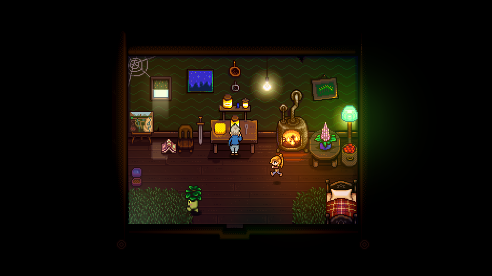
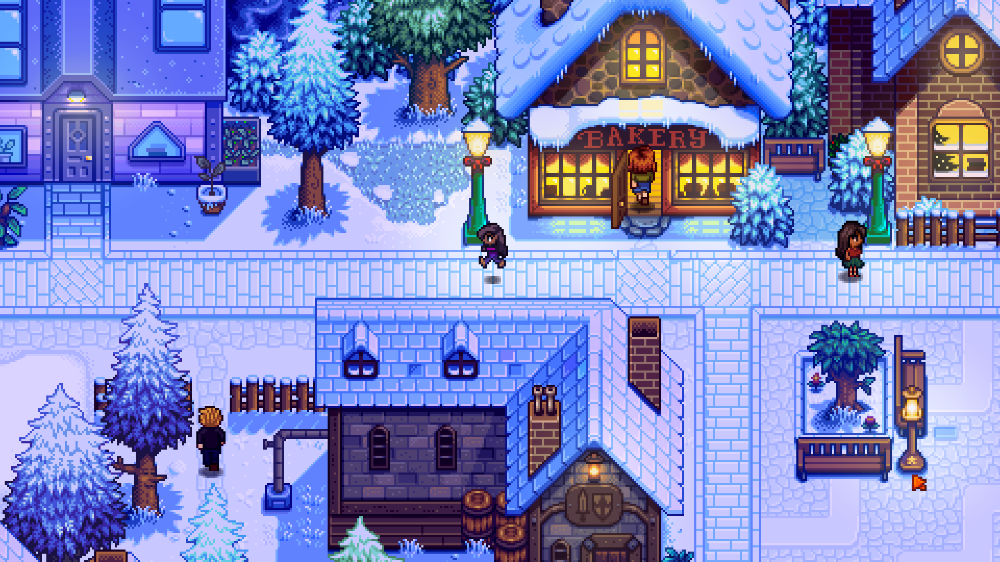
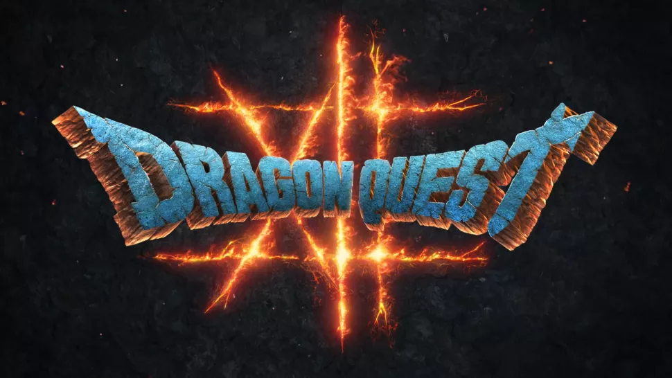

-SECRET RECOMMENDATIONS-
Shh! This is a top-secret page; how did you get here?
Well, that's neither here nor there. Welcome to my page of top-secret, up-and-coming recommendations.
Why are they top-secret? They're not, really. But isn't everything secret a little more fun? It feels more meaningful to find something that's been hidden, even if the information doens't really need to be kept hidden.
-WHAT MAKES THESE SPECIAL-
Other than the fact that they're top-secret? These are my recommendations for games that haven't come out yet.
Some of my favorite developers, studios, and/or franchises are releasing games soon. Usually I don't give out recommendations for games that haven't come out, because how could I recommend something I've never played? But now, you've got access to my secret recs, the games I'm definitely going to play when they come out.
These are games that I'd preorder. And I almost always advise against that. But here are some games that I will most certainly be preordering (if the option presents itself).
-THE LEGEND OF ZELDA: TEARS OF THE KINGDOM-
Release Date: May 12, 2023
Now, I can't talk much about this game, or really any of these games, for that matter. I'm intentionally staying away from all promotional material. I want to be as surprised as possible.
For this game in particular, I've watched this video from E3 2021, and that's it. There is another on the Nintendo YouTube channel, but I refuse to watch it. The most I can do is lead you to the source.
I am beyond excited for this game. If you've read my public recommendations on this page, you know that the predecessor to this game, Breath of the Wild, is one of my favorite games (and favorite pieces of media) ever made. I genuinely think it's one of the closest things to a perfect open-world video game this world may ever get.
So, that leaves wide shoes for this game to fill. I don't know whether they can fill them, nor should I; this game will put its own pair of shoes on and shouldn't be constantly compared to BotW just because they're tied to the same storyline.
Promotional art for The Legend of Zelda: Tears of the Kingdom
A character running on a snowy street in front what appears to be a chocolate shop or factory
A set of characters running around in a small all-purpose room, likely an early-game environment
A cozy, log-cabin style mansion low-lit with a fireplace, lamp, and candelabra
A character running on a snowy street in front of a bakery
-HAUNTED CHOCOLATIER-
Release Date: TBD
I haven't the faintest idea what this game is about other than making chocolate and that there is combat, but it's enough for me that the game is a thing at all.
It's being developed by ConcernedApe, the same fellow who developed and now publishes Stardew Valley. If you saw me gushing for a few paragraphs about this game on this page, you know how much I love Stardew. To hear the same person who brought me that joy is making another game is enough for me to say yes.
-DRAGON QUEST 3 (HD 2D REMAKE)-
Release Dates: TBD
I fell in love with this series playing Dragon Quest 11 and Dragon Quest Builders 2. My goal is to one day play each game in the mainline series.
For DQ3, it's more of a style remake than anything. Lots of these are coming out these days, but I'm particularly excited about this. It'll be in the art style of Octopath Traveler, and it's another opportunity for me to play a DQ game. Exciting stuff.
-DRAGON QUEST 12: The Flames of Fate-
Release Dates: TBD
I intentionally have left myself deaf and blind to information about this game, much like with Tears of the Kingdom. I'm excited to go into it knowing absolution nothing; it's how I fell in love with Dragon Quest 11 and Dragon Quest Builders 2, after all. I'd love another surprise favorite.

Promotional gameplay (as a still image) for Dragon Quest 3 HD-2D Remake
Title art for Dragon Quest 12

Promotional art for Slime Rancher 2
-SLIME RANCHER 2-
Early Access Release Date: September 22, 2022
Official Release Date: TBD
I discovered on the day that I'm writing this, September 22, 2022, that this game dropped in early access on this Steam page.
This is a game I want to experience when it's ready for me (i.e. bug free), so I won't dive into the early access, but I'm excited for it nonetheless. Several dozen happy hours were spent playing Slime Rancher 1, so I'm excited to see what they do with the next game.
Quite frankly, even if it's more of the same idyllic exploration/resource-management game I love with new elements, I'll be perfectly happy.